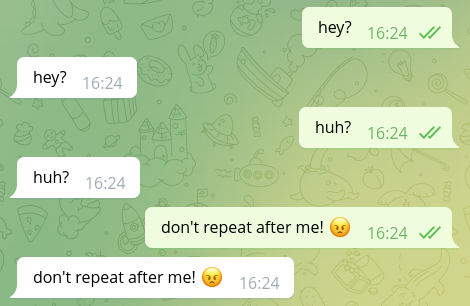

Writing your first bot with teloxide
In order to use teloxide you first need to create a Rust project with cargo:
$ cargo new my-first-bot --bin
Note: this book assumes that you already have basic knowledge of Rust and have
cargoinstalled. If you don't have it, we recommend reading The Rust Book.
Teloxide is an async library, so in order to use it you need an async runtime like tokio.
Add tokio and teloxide dependencies to Cargo.toml generated by cargo new:
# Cargo.toml
[dependencies]
tokio = { version = "1.17", features = ["rt-multi-thread", "macros"] }
teloxide = "0.9"
Note: teloxide currently requires
tokioand won't work with other runtimes.
Now you can start writing your bot. First, you'll need to create an async entry point to the program:
// This is needed to run `async` main function via tokio runtime #[tokio::main] // Returning result from main allows for easier error handling async fn main() -> Result<(), Box<dyn std::error::Error>> { // ... Ok(()) }
Then, you can create a bot using Bot::new and auto_send extension
(we'll cover what auto_send does in later chapters):
use teloxide::prelude::*; #[tokio::main] async fn main() -> Result<(), Box<dyn std::error::Error>> { // Replace TOKEN with the token you've got when creating the bot let bot = Bot::new("TOKEN").auto_send(); Ok(()) }
Then, try sending yourself a message:
use teloxide::{prelude::*, ChatId}; #[tokio::main] async fn main() -> Result<(), Box<dyn std::error::Error>> { let bot = Bot::new("TOKEN").auto_send(); // replace 0 with your user id let your_id = ChatId(0); bot .send_message(your_id, "Hi!") // `.await` is needed to wait for an async operation // `?` propagates possible errors .await?; Ok(()) }
Note: you can get your id from @ShowJsonBot (message -> from -> id).
Note: Telegram bots can't initiate a dialog, so you need to write to the bot first.
Now you can run the bot and it should send you a "Hi!" message:

Managing bot token
Keeping the bot token in source code is not a good idea for multiple reasons:
- every time you'll want to change the token (e.g. to move from the test bot to a production one) you'd need to recompile the program
- It's easy to accidentally commit the token that is inside the source code into a VCS like git
Instead, you normally either pass the token as a command line argument or via environment variables.
For the latter teloxide provides a handy Bot constructor -- Bot::from_env.
It gets the token from the TELOXIDE_TOKEN environment variable.
#![allow(unused)] fn main() { use teloxide::prelude::*; let bot = Bot::from_env().auto_send(); }
Reacting to users
A bot that just sends messages may be all you need, but often you want to react to the user's input.
For this teloxide provides a variety of constructs.
The simplest option to process user's input is called "repl".
To use it you just need to provide a bot and a function to it. Then, the function will be executed on each message from the user:
use teloxide::prelude::*; #[tokio::main] async fn main() -> Result<(), Box<dyn std::error::Error>> { let bot = Bot::new("TOKEN").auto_send(); teloxide::repl(bot, |message: Message, bot: AutoSend<Bot>| async move { // There are non-text messages, so we need to use pattern matching if let Some(text) = message.text() { // Echo text back into the chat bot.send_message(message.chat.id, text).await?; } // respond is an alias to `Ok()` with a error type compatible with teloxide respond(()) }).await; Ok(()) }

To stop the bot running in a repl, you can press ctrl + C.
Note that it can take some time to stop the bot: